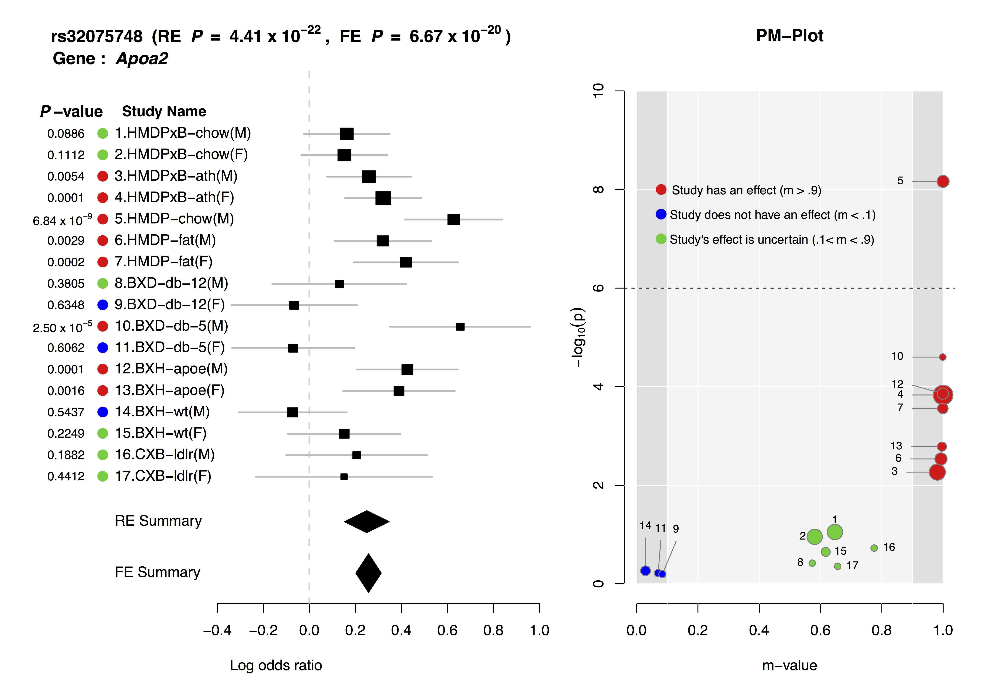
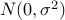
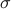
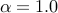
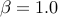
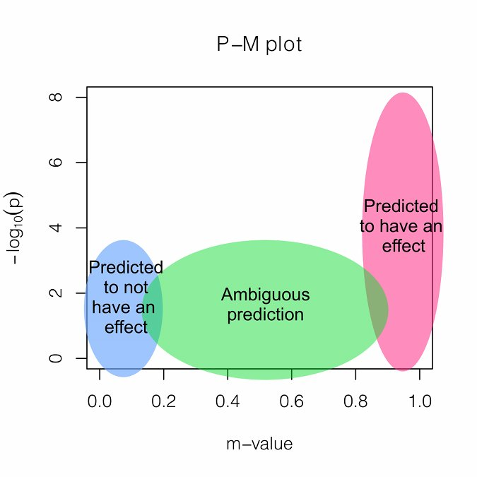

METASOFT/ForestPMPlotThis is a mirror site of METASOFT site (genetic.cs.ucla.edu/meta). Because the original site has access problem from some countries, we provide this mirror site.
METASOFT is a free,
open-source meta-analysis software tool for
genome-wide association study analysis,
designed to perform
a range of basic and advanced meta-analytic methods
in an efficient manner.
ForestPMPlot is a free,
open-source
a python-interfaced R package tool for analyzing the heterogeneous studies in meta-analysis by visualizing the effect size differences between studies.
The resulting plot can facilitate the better understanding of heterogeneous genetic effects on the phenotype in different study conditions.
OverviewMETASOFT provides the following methods:
ForestPMPlot is a visualization tool. The resulting plot consists of the following components:
 Download
You can SUBSCRIBE to our mailing list to be notified for any major updates and bug fixes. Version/bug info
METASOFT
ForestPMPlotUser's guideMETASOFTImportant: User interface has been changed since v2.0.
usage: java -jar Metasoft.jar [options]
-input <FILE> Input file (Required)
-output <FILE> Output file (default='out')
-log <FILE> Log file (default='log')
-pvalue_table <FILE> Pvalue table file (default='HanEskinPvalueTable.txt')
-lambda_mean <FLOAT> (Random Effects) User-specified lambda for mean effect part
(default=1.0)
-lambda_hetero <FLOAT> (Random Effects) User-specified lambda for heterogeneity
part (default=1.0)
-binary_effects Compute binary effects model p-value (default=false)
-binary_effects_sample <INT> (Binary effects) Number of importance sampling samples
(default=1,000)
-binary_effects_p_thres <FLOAT> (Binary effects) P-value threshold determining if we will
use large number of samples (default=1E-4)
-binary_effects_large <INT> (Binary effects) Large number of importance sampling samples
for p-values above threshold (default=100,000)
-mvalue Compute m-value (default=false)
-mvalue_method <METHOD_NAME> Which method to use to calculate m-value between 'exact' and
'mcmc' (default=exact)
-mvalue_p_thres <FLOAT> Compute m-values only for SNPs whose FE or RE2 p-value is
below this threshold (default=1E-7)
-mvalue_prior_beta <ALPHA BETA> Alpha and Beta value for Beta dist prior
Betadist(alpha,beta) for existence of effect
(default=1.0,1.0)
-mvalue_prior_sigma <FLOAT> Sigma value for normal prior N(0, sigma^2) for effect
(default=0.2)
-mcmc_sample <INT> (MCMC) Number of samples (default=10,000)
-mcmc_burnin <INT> (MCMC) Number of burn-in (default=1,000)
-mcmc_max_num_flip <INT or FLOAT> (MCMC) Usual move is flipping N bits where N ~
U(1,max_num_flip). If an integer value i >= 1 is given,
max_num_flip = i. If a float value 0 < k < 1 is given,
max_num_flip = k * #studies. (default=0.1)
-mcmc_prob_random_move <FLOAT> (MCMC) Probability that a complete randomization move is
suggested (default=0.01)
-seed <INT> Random number generator seed (default=0)
-verbose Print RSID verbosely per every 1,000 SNPs (default=false)
-help Print help
Binary Effects Model
BE is another kind of random effects model assuming that the effects either exists or not in the studies. Our simulations show that BE is often more powerful than RE2. However, BE requires importance sampling to calculate p-value and is slower than RE2. To use BE, use option -binary_effects. We implemented an adaptive sampling that performs BE with smaller number of samples first (-binary_effects_sample option), and if the calculated p-value exceeds a threshold (-binary_effects_p_thres option), then a larger number of samples are used for higher accuracy (-binary_effects_large option). M-value
To compute m-values, use option -mvalue. M-values require two priors: Beta distribution prior for the presence/absence of effect (specified by -mvalue_prior_beta option), and normal distribution prior for the effect size ( where  is specified by -mvalue_prior_sigma option). The default for Beta distribution prior is uniform distribution ( and ) and the default for is 0.2. Since we assume a normal prior for effect size, for quantitative traits, the value of has to be chosen carefully considering the unit of the data. One can choose a value based on the data in an empirical Bayes style, or a rough and ad-hoc approach is just using the default value (0.2) designed for dichotomous traits. The computation time is exponential to the number of studies. If the number of studies is small (e.g. <10), an exact calculation is feasible (-mvalue_method exact option). If the number of studies is large, MCMC should be used (-mvalue_method mcmc option). The user can specify the number of burnin (-mcmc_burnin) and the number of samples (-mcmc_sample). The MCMC move is flipping the existence of effect for N studies where N is sampled from Uniform(1, max_num_flip) where max_num_flip is specified with -mcmc_max_num_flip option.
rsAAAAAA study1beta study1stderr study2beta study2stderr study3beta study3stderr rsBBBBBB study1beta study1stderr study2beta study2stderr study3beta study3stderr rsCCCCCC study1beta study1stderr study2beta study2stderr study3beta study3stderr
java -jar Metasoft.jar -input example.txt
How to correct for population structure
We provide a simple method for correcting for population structure for RE2. How to correct for population structure in each single study
Often, the user wants to apply genomic control not only to the meta-analysis p-values but also to each single study before the user uses them in the meta-analysis. This can be easily done by, in the input file, increasing the standard errors by the square root of the calculated inflation factor for each study. ForestPMPlotImportant Package Dependency :
Usage:
usage: python pmplot.py [meta_input] [meta_output] [study_name] [study_order] [rsid] [gene_name] [out_file]
[meta_input] Input file of METASOFT.
[meta_output] Output file of METASOFT.
[study_name] File containing studynames. One study name per line. The order of the
study names should be matched with [meta_input] and [meta_output] files.
[study_order] File containing the display index of studies. One index per line.
[rsid] Rsid of a SNP to generate ForestPMPlot.
[gene_name] Implicated gene name for the SNP.
[out_file] ForestPMPlot file. (Format : pdf)
Format converter
python plink2metasoft.py outputfile plink_assoc_file1 plink_assoc_file2 plink_assoc_file3 ... Our software converts multiple .assoc files from plink to the input format of METASOFT. If .assoc files include both A1 and A2 columns, our converter can detect simple strand flips. There are three output files: .meta file is the formatted file, .mmap file includes SNP map information, and .log file includes log information such as strand flipped SNPs, excluded SNPs, and reasons for exclusions. Python and R must be installed in the system to use our converter. InterpretationIf an associated SNP shows high heterogeneity, interpreting the results is challenging. We provide a measure called M-value, the posterior probability that the effect exists in each study. M-values have the following interpretations.
M-values can be plotted with p-values in a two-dimensional space, called PM-plot, which has the following interpretations.  GxE InterpretationJoint analysis of multiple studies with varying environmental conditions using a meta-analysis can provide unique opportunity to identify gene-by-environment interactions. Examining both forest plot and PM-plot allows us to easily hypothesize that there is a specific group of studies showing gene-by-environment interactions. For example, let's consider study 10-11 containing mouse C57BL/6 x DBA/2 F2 strains with homozygous deficiency in leptin receptor (db/db). In forest plot, effect size estimate from male study is much larger than that of female study, but standard error of the female effect size estimates is large so that it is not clear that the effect size of female study is zero. However the m-value prediction clearly shows the distinction between male and female studies, which suggest gene-by-sex interaction under the homozygous deficiency in leptin receptor (db/db) condition.The above is an example ForestPMPlot of 17 HDL mouse studies from the paper of Kang et al. Publication
Buhm Han and Eleazar Eskin, “Random-Effects Model Aimed at Discovering Associations in Meta-Analysis of Genome-wide Association Studies”, The American Journal of Human Genetics (2011) 88, 586-598. LINK
Buhm Han and Eleazar Eskin, “Interpreting Meta-Analysis of Genome-wide Association Studies”, In Press. PLoS Genetics (2012). (Manuscript available here)
Eun Yong Kang and Buhm Han and Nicholas Furlotte and Jong Wha J. Joo and Diana Shih and Richard C. Davis and Aldons J. Lusis and Eleazar Eskin, “ Meta-Analysis Identifies Gene-by-Environment Interactions as Demonstrated in a Study of 4,965 Mice ”, PLOS Genetics (2014) 10(1), e1004022. LINK
Eun Yong Kang and Buhm Han and Eleazar Eskin, “ ForestPMplot: a flexible tool for visualizing heterogeneity between studies in meta analysis”, Submitted
ContactMETASOFTBuhm Han : buhm.han (AT) snu.ac.kr , http:mail.snu.ac.kr/a>ForestPMPlotEun Yong Kang : ekang (AT) cs.ucla.eduFunding informationB.H. E.Y.K and E.E. are supported by National Science Foundation grants 0513612, 0731455, 0729049 and 0916676, and NIH grants K25-HL080079 and U01-DA024417. B.H. is supported by the Samsung Scholarship. This research was supported in part by the University of California, Los Angeles subcontract of contract N01-ES-45530 from the National Toxicology Program and National Institute of Environmental Health Sciences to Perlegen Sciences. |